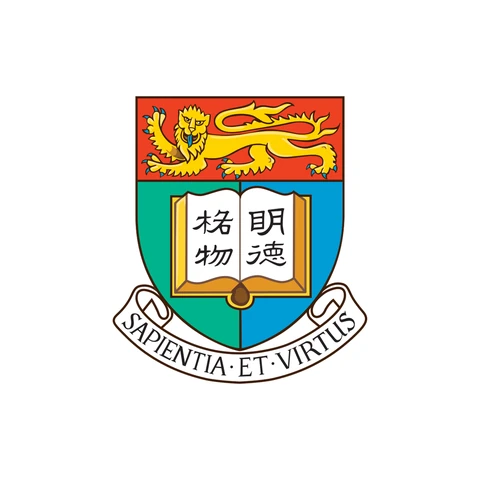
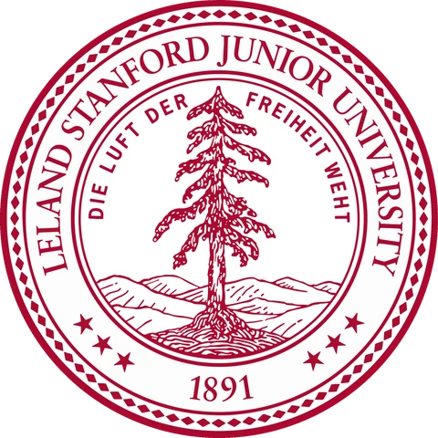
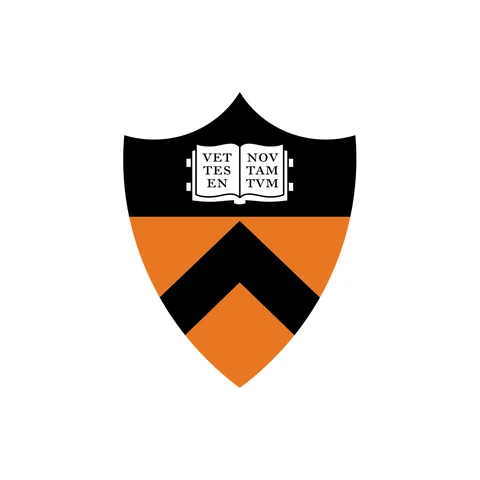
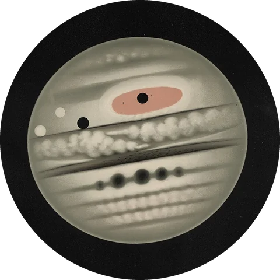
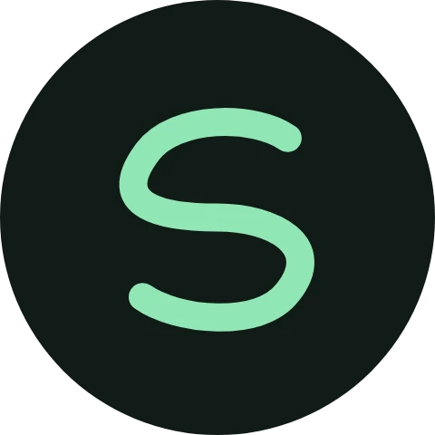
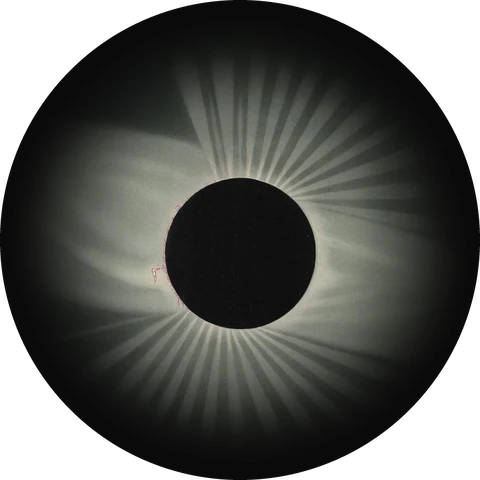

2026 — now
Carnegie Mellon University
Master’s
I’m a Master’s student at Carnegie Mellon, and I focus on data synthesis, LLM post-training, agentic coding and embodied AI. At the Stanford Vision and Learning Lab I’m working with Fei-Fei Li, Jiajun Wu and Raven Huang, and at CMU I’m doing research in Eric Xing’s SAILING Lab. I was advised by Shilong Liu.
Before CMU I was at ByteDance and TikTok, working on agentic data synthesis, post-training for coding agents, and continued pre-training. I also spent five months at MiraclePlus, the former Y Combinator China, and studied economics and finance at the University of Hong Kong, adding computer science as a second major in 2025.
2022 — now
2026 — now
Master’s
2025 — 2026
Agentic data synthesis, and post-training for coding agents.
2025 — 2026
Continued pre-training, with data ablations and data curation.
2023
Five months at the former Y Combinator China, sourcing deals and doing technical diligence on seed-stage AI startups.

2022 — 2026
Bachelor of Economics and Finance, with a double major in Computer Science, which I only began in 2025.
2026 — now

Oct 2026 — now
Mentored by Raven Huang, under the supervision of Fei-Fei Li and Jiajun Wu
Sep 2026 — now
Carnegie Mellon University

Sep 2026 — now
Fit, Not Format at the Edit Interface, supervised by Shilong Liu
Papers and code

Paper · 2026
Langlin Wan, Zhixuan Liang, Guangyuan Wang, Shilong Liu
Physics of Coding Agents, Part 1. A coding agent tells its harness where an edit goes, either by line numbers or by quoting the code, and that choice decides what the agent loop pays and which errors anyone sees.
Preprint · Project page · Code

GitHub
An open-source coding agent that is safe, speedy and self-evolving. Every run in the paper above used it as the harness.
GitHub
An open guide to code-agent harnesses, the scaffolding around a coding model. 100+ stars, and featured by Qingke AI.

Write to me